Muhammad Taqi Usmani (born 5 October 1943), is a Pakistani Islamic scholar and former judge who is the president of the Wifaq ul Madaris Al-Arabia and the vice president and Hadith professor of the Darul Uloom Karachi. An intellectual leader of the Deobandi movement, he has authored 143 books in Urdu, Arabic and English, including a translation of the Qur'an in both English and Urdu as well a 6-volume commentary on the Sahih Muslim in Arabic, Takmilat Fath al-Mulhim and Uloomu-l-Qur'an. He has written and lectured extensively on hadith, and Islamic finance. He chairs the Shariah Board of the Bahrain-based Accounting and Auditing Organization for Islamic Financial Institutions (AAOIFI). He is also a permanent member of the Jeddah-based International Islamic Fiqh Academy, an organ of the OIC. In Pakistan, Usmani served as a scholar judge on the Shariat Appellate Bench of the Supreme Court from 1982 to 2002, and on the Federal Shariat Court from 1981 to 1982. From 1977 to 1981 he was a member of Zia's Council of Islamic Ideology and was involved in drafting the Hudood Ordinances.[3
Kitabs:
- An introduction to islamic finace
- The Noble Quran: Meaning with explanatory notes
- Inamul Bari
- Islahi majalish
- The Authority of Sunnah
- Islam & Modern Politics
- How was Akabire Deoband
- Spainer kanna
- The language of the Friday Khutbah more
Kitabs images
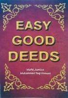 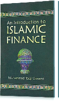
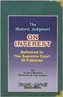
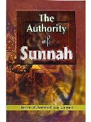
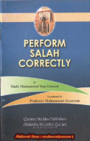
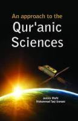
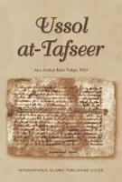
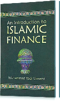
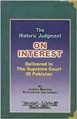
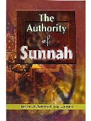
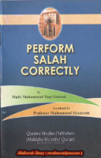
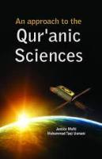
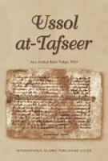
Awards and honours
- 2019: Sitara-i Imtiaz (Star of Excellence) in the field of public service, conferred by the President of Pakistan
- 2017: The Global Islamic Finance Report ranks Usmani 2nd most influential person in the global Islamic financial services industry
- 2016: Lifetime Achievement Award, Islamic Finance Forum of South Asia (IFFSA)[
- 2014: Islamic Development Bank (IDB) Prize in Islamic Banking and Finance
- 2011: King Abdullah II Award
- 2010: Wisam al-Istiqlal (Order of Independence), 1st class, conferred by the King of Jordan